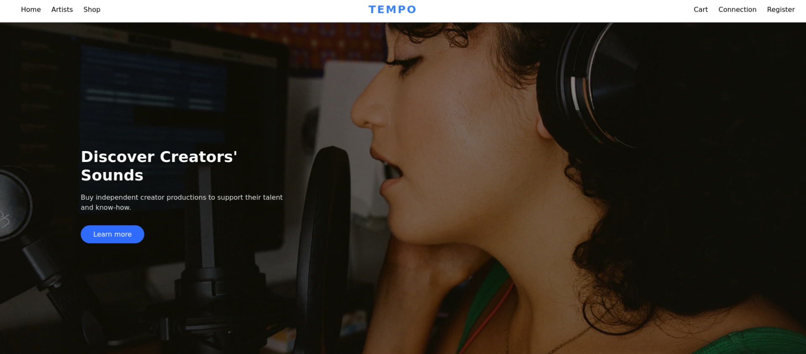
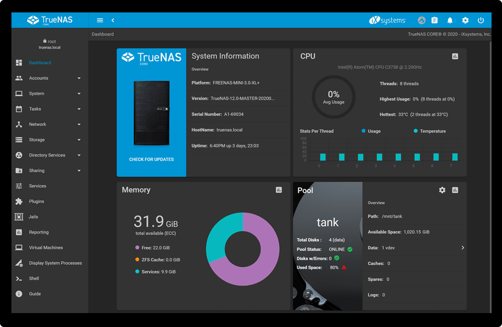
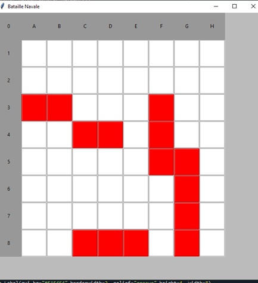
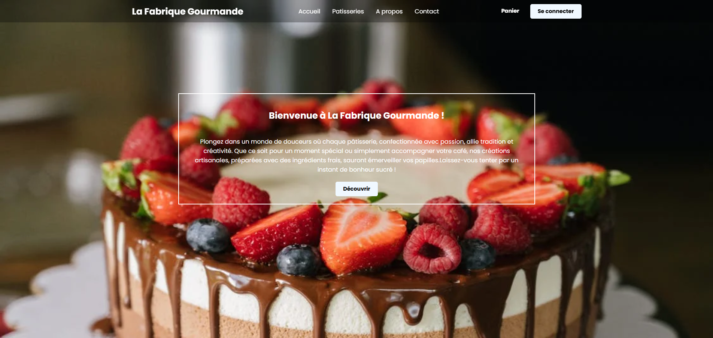

Site Web de E-Commerce
Développement d'une application web complète sous CodeIgniter 4 et
Docker, intégrant des fonctionnalités e-commerce (panier, wallet,
messagerie ...) et une interface d'administration pour la gestion des produits et des commandes.
php
CodeIgniter 4
Qui-est-ce ?
Jeu "Qui-est-ce ?" développé en Kotlin avec support multijoueur en réseau et une architecture MVC complète.
Kotlin
MVC

NAS
Conception et déploiement d'un serveur de stockage réseau (NAS) basé sur l'OS TrueNAS Core/Scale pour la centralisation de mes photos et de documents.
TrueNas

Bataille Naval
bataille navale qui permet de jouer contre un ordinateur réaliser en Python. Utilisation de la bibliothèque Tkinter pour l'affichage.
Python
Tkinter

Site web vitrine
Page d'entreprise pour une boulangerie fictive, avec design moderne et animations CSS.
HTML
CSS
JS
Figma